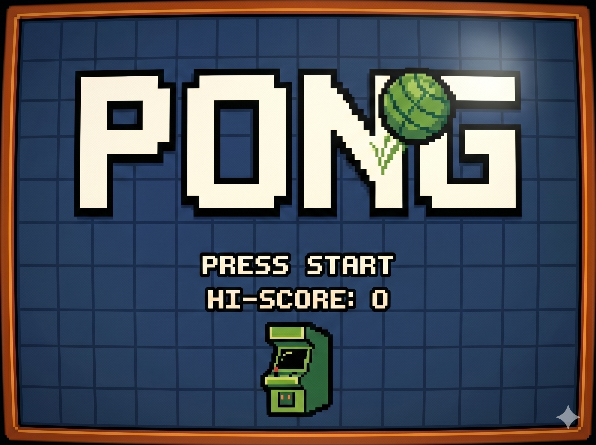
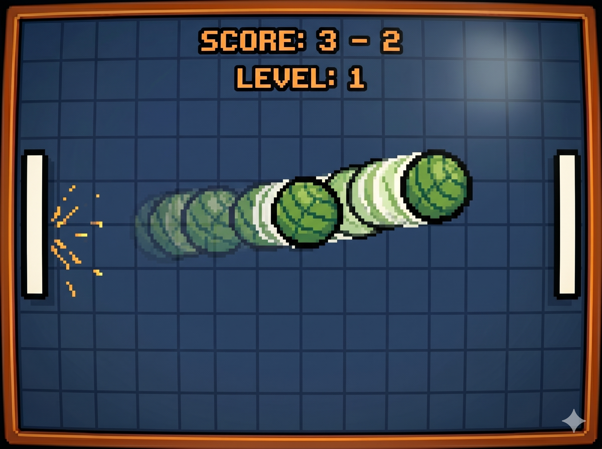

Lanzado por Atari en 1972, fue el primer videojuego con éxito comercial masivo. Fue creado por Nolan Bushnell basándose en un juego de ping-pong electrónico previo.
Es un simulador de tenis de mesa en dos dimensiones. Dos palas compiten por no dejar que la bola toque su borde del tablero, usando ángulos de rebote para engañar al oponente.
Nivel: Bajo/Medio. La dificultad se eleva aumentando la **velocidad escalar de la bola** tras cada rebote. Además, según en qué parte de la pala golpee la bola, el ángulo de salida es más cerrado, dificultando la respuesta del rival.
Implementa una lógica de vectores. Se utiliza la clase Rectangle de Java para detectar intersecciones entre los objetos gráficos en pantalla.